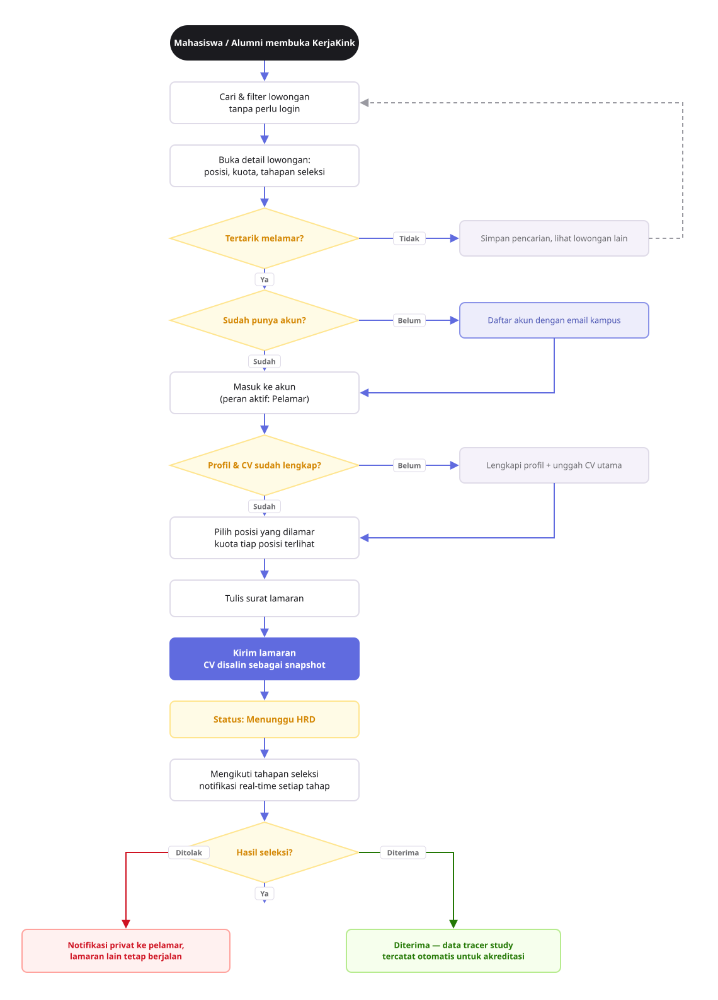
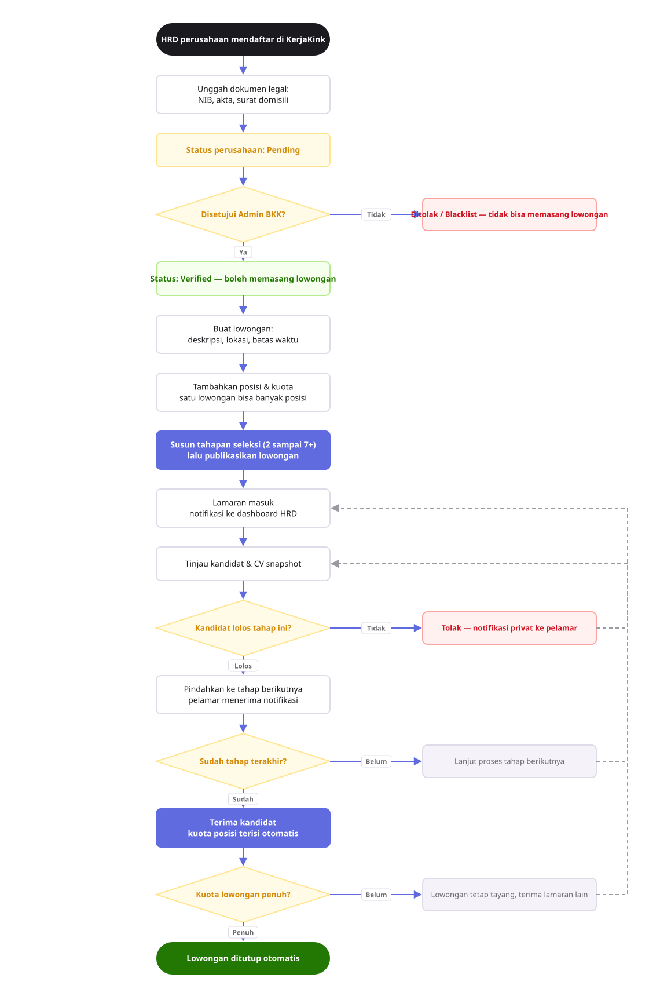
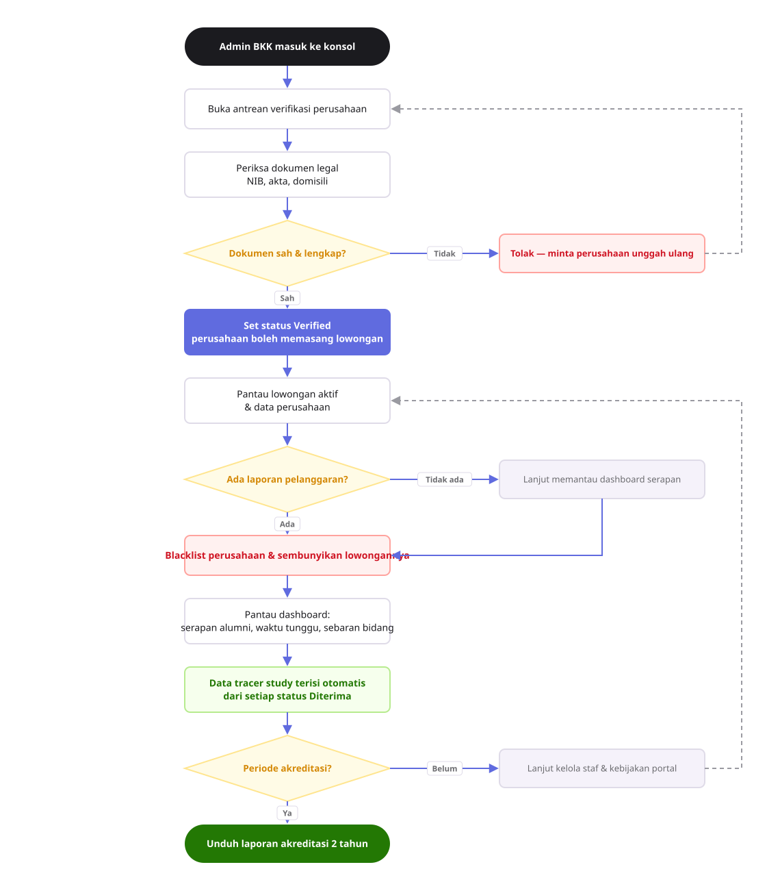

Tiga alur yang saling terhubung: pelamar mengirim lamaran, HRD menggerakkan tahapan seleksi, Admin BKK menjaga kualitas lowongan dan menarik data akreditasi.



{{ current.note }}
assets/diagram/flow-mahasiswa-alumni.svg, flow-hrd-perusahaan.svg, flow-admin-bkk.svg — SVG skalabel dengan warna dari tokens/colors.css.